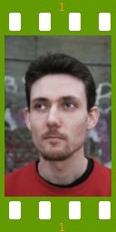

People of openSUSE: Martin Schlander

Here is the interview with Martin Schlander, also known as ‘cb400f’, from Denmark. Have fun reading it!
- Nickname: cb400f
- Favorite season: Definitely summer, in Denmark they aren’t too hot.
- Motto: Be cool, fool! It’s more like a mantra, though. It’s from a song by Notorious B.I.G. The wisdom is infinite, it’s good advise in just about any conceivable situation.
Please introduce yourself!
My name is Martin Schlander, I’m 30 years old living in Copenhagen, Denmark. Technically I’m supposed to be writing my masters as a student of social sciences at the University of Roskilde, but in practice I’ve been inactive for a long time now, living off of a low status part time job. I’m thinking maybe it’s time I start looking for a “real” job.
I’m single and don’t keep any animals around, except a stuffed Geeko. I’m considering getting a stuffed Konqi also. Sometimes the Geeko seems a little lonely.
Tell us about the background to your computer use.
My first computer was a Commodore 64 which I got in the mid 80s when I was 10-11 years old. Home computers were not that common then. I then moved to Amiga 500 and later to PC. I’ve always been relatively comfortable with computers, but I was never very technically inclined. I’m strictly a home user with no training or technical skills worth mentioning. I did do volunteer work as network admin and webmaster in a dormitory where I used to live..
When and why did you start using openSUSE/SUSE Linux?
February 2005, SUSE Linux 9.2, network installation. I will never forget. I really wanted to get rid of Microsoft Windows, but Ubuntu and Fedora Core had left me rather un-optimistic, however SUSE just blew me away. It was love at first sight and since then the love has only grown, with the occasional crisis (hint: 10.1). What I liked about SUSE then are the same things I like today: Great KDE, YaST, very good out-of-the-box experience, without requiring too much tweaking.
When did you join the openSUSE community and what made you do that?
I almost instantly began hanging out in IRC, mainly to learn things, there was no openSUSE-project then. I think I first joined the mailinglists around February 2006 and started beta-testing 10.1. It seemed like a natural thing to do since I was a huge fanboy and I wanted to help make the distro even better. Since then my involvement has been steadily growing.
In what way do you participate in the openSUSE project?
I guess my main contribution is being coordinator for Danish translations. My team and I translated 10.2 100% and we will definitely do the same for 10.3. I also beta-test and try to give feedback and come up with ideas on the mailingslists. For a while I joined the wiki team, but I decided I was starting to spend too much time.
I also do some things that are not formally connected to the project, but I think are very helpful nevertheless. I “develop” a couple of simple Kommander-scripts – konvenientSUSE and opensuse-xgl-settings – which help users configure certain things graphically and easily. I have done a little translation for KDE, and I plan to get much more active as KDE4 progresses – openSUSE will of course benefit from this.
In all modesty I also consider myself unofficial openSUSE ambassador to Denmark. I try to keep the Danish community updated with news and for Software Freedom Day at the SSLUG event in Copenhagen, I will happily hand out 250 openSUSE 10.2 promo DVDs that Martin Lasarsch sent me, and I maintain a rather popular guide to openSUSE, it can be seen at: suse.linuxin.dk
What especially motivates you to participate in the openSUSE project?
It’s a great product which I can download for free, I feel obliged to contribute back, if I couldn’t I would feel strange. And it’s a great pleasure to help shape the product and get your little fingerprints on it. Also lots of nice and interesting people, lots of interesting things to do.
I’m also a firm believer in free software philosophy and spreading software freedom is a big motivation for me, and openSUSE is the best free operating system for my tastes.
What do you think was your most important contribution to the openSUSE project/community or what is the contribution that you’re most proud of?
I guess that must be the 10.2 translations. I feel we made openSUSE the best localized distro out there for Danish – for 10.3 we aim to improve it further.
I’m also kind of proud of playing a role in making Ted and Erin apologize on Novell Open Audio (Autobuild and Quality Assurance episode, August 2006) for talking disrespectfully about openSUSE, and having my e-mail about it read on the show.
When do you usually spend time on the openSUSE project?
Since I only work part time and don’t take care of my studies I’m free to spend time on openSUSE almost whenever I please.
Three words to describe openSUSE? Or make up a proper slogan!
During the recent slogan “contest” I suggested “Powerful Technology Together”. I still think that was the best suggestion, even though it’s not a proper sentence, but to me it sums up three key positive aspects of openSUSE, and I think it has a nice ring to it.
What do you think is missing or underrated in the distribution or the project?
Everything I’ve missed in openSUSE seems to come with 10.3. Faster boot, fast package management startup with low RAM-use, no ZMD, green artwork, I’m really excited about the prospects of 10.3
I think openSUSE is underrated in a number of areas.
The buildservice repos. The easy availability of binary packages for latest KDE applications, Firefox, Thunderbird, OpenOffice.org, Wine etc. Available at your fingertips without forcing you to jeopardize your core system to keep up with the latest. I don’t think other distros provide this possibility so easily.
On the server, I think many people think of openSUSE as a very desktop oriented distro and don’t realize it’s a good server distro also, it’s the codebase of SUSE Linux Enterprise Server, that text install is an option, and that yast modules are available in ncurses.
Free Software friendliness. Because of SUSE history with YaST and probably also the Novell-Microsoft deal, a lot of people seem to think of openSUSE as not being very friendly towards software freedom, but the OSS-versions we’ve had for the last releases are actually about as free as it gets – with no firmware, no binary-only kernel modules, no repositories offering non-free software enabled by default.
And as far as x86_64 desktop operating systems there’s really no competition. Not sure people realize this.
What do you think the future holds for the openSUSE project?
If not mismanaged I think sky’s the limit. Like I mentioned before I’m very optimistic about 10.3 – and the future of free software in general.
A person asks you why he/she should choose openSUSE instead of other distribution/OS. What would be your arguments to convince him/her to pick up openSUSE?
Best KDE, most graphical system tools of any distribution, good balance of stability and up-to-date software.. and I’d be able to better help them, should they encounter problems.
Which members of the openSUSE community have you met in person?
Hm, none. I meet many users at lug meetings and events. But I haven’t met any contributors in person.
How many icons are currently on your desktop?
Three. But I have a whole lot in my kicker child panel.
What is the application you can’t live without? And why?
I love many of them.. Konversation is probably the one I use the most. I’m afraid, I spend way too much time chatting on IRC.
As a translator KBabel is important to me and has served me well. I try to direct as much positive energy as possible towards Nick Shaforostoff, who’s currently working on KAider, the KDE4 replacement for KBabel.
Konq, Yakuake and BasKet would also be very difficult to replace.
Which application or feature should be invented as soon as possible?
I’m pretty happy with what we have. I would like to not need Adobe Flash, and I sometimes miss a nice ultra light weight audio player for when I want to listen to a single file real quick for which Amarok is overkill. Currently I use Kaboodle for that purpose – but I’m not particularly pleased with it.
Which is your preferred text editor? And why?
Kate. I don’t use editors that much but Kate is light and fast and has all the features I need. On the console I prefer nano as I mostly do really simple edits there.
Which famous person would you want to join the openSUSE community?
Chuck Norris
Which computer related skills would you like to have?
C++/Qt programming, naturally. I love the KDE project and would love to be able to help develop it.
The Internet crashes for a whole week. How would you feel, what would you do?
I would feel very restless and probably do a lot of thinking.
Which is your favorite movie scene?
The one I can think of right now is in “The Good, the Bad and the Ugly” where Clint Eastwood and Eli Wallach blow up a bridge that many US civil war soldiers have died fighting over. The wounded leader of the northern states soldiers dies with a smile on his face as he hears the explosion.
Star Trek or Star Wars?
I like both, moderately. For both I prefer the old episodes.
What is your favorite food and drink?
I’m not very much into those kind of things, I avoid fancy restaurants as much as possible. Some water, meat balls and potatoes will make me more than happy.
Favorite game or console (in your childhood and nowadays)?
Sensible World of Soccer on the Amiga. I won the Danish championships in 2004 – of course not many Amiga gamers exist anymore and most of the competition was drunk..
I think Racer must be my favourite game on GNU/Linux, but I rarely play.
Which city would you like to visit?
Barcelona. I’m a big fan of the football club and I hear many great things about the city.
What is your preferred way to spend your vacation?
On a motorcycle.
Someone gives you $1.000.000. What would you do with the money?
Buy a small appartment, a Honda VFR 800, donate money to some of the free software projects I like. Put the rest in the bank for a rainy day.
If traveling through time was possible, when would we be most likely to meet you?
I’m not much a traveller, I probably wouldn’t go far. Maybe the 1960s, 1970s.
There’s a thunderstorm outside. Do you turn off your computer?
Nah.. should I?
Have your ever missed an appointment because you forgot about it while sitting at your computer?
I probably would have if not for KOrganizer.
Show us a picture of something, you have always wanted to share!
Hm, tough one, how about this: Our director AJ, wearing sandals and sitting on the floor working at a GNU/Linux event. Mark Shuttleworth and Steve Jobs should step up their game.
You couldn’t live without…
Time alone.
Which question was the hardest to answer?
Hehe, the “famous person” one, but when the answer occurred to me it was obvious – there can be only one answer to that question.
What other question would you like to answer? And what would you answer?
Q: What do you think of the questions? A: Very good. Especially the “which one was hardest to answer?” one.